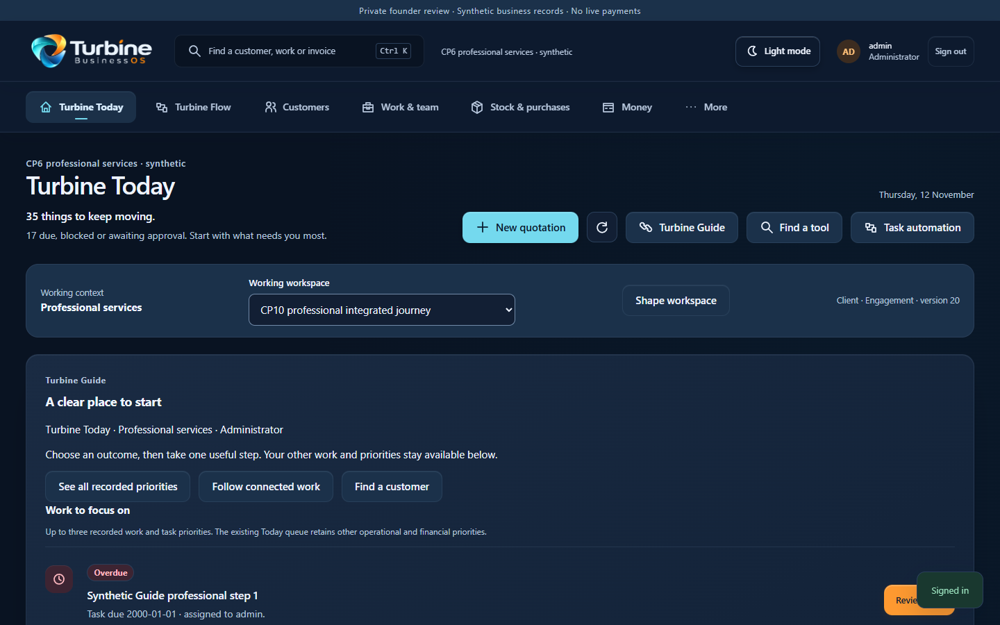

A clear place to begin
TURBINE Guide is conceived as the first-class guided layer across BusinessOS, not a chatbot bolted onto individual pages. From the first working session, the experience should help a user orientate themselves around current responsibilities, recorded work and the next useful action.
- A role-appropriate starting view rather than an empty dashboard
- Guided discovery of customers, pending commitments and unfinished tasks
- A short route from an observed issue to the record or action that resolves it
Context that follows the work
Guidance becomes useful when it understands where the user is in the business journey. A quotation, purchase request or overdue job each provides different context. TURBINE Guide should explain related work without duplicating the authoritative business records.
- Surface related customer, transaction or delivery context
- Keep suggested next steps connected to the record of origin
- Distinguish recorded facts from generated explanations and recommendations
Explanation without bypassing authority
The Guide must follow the same identity, tenancy and entitlement rules as every other BusinessOS capability. Helpful language is never a replacement for approval, financial segregation or audit evidence.
- Respect role and tenant boundaries on every retrieval
- Explain blocked actions and required approvals without exposing restricted data
- Retain clear authority and audit trails for consequential changes
A more confident adoption journey
Guidance also matters when a customer is migrating from disjointed systems. From data import through validation and routine operations, an experienced business user should see what happened, what failed and what to do next.
- Make data validation and reconciliation understandable
- Support exceptions and safe retry decisions
- Expose qualification and uncertainty rather than claiming unsupported automation
Guidance in TURBINE Today
The screenshot below is a real development/qualification capture with synthetic records. It is not evidence of general production availability. It shows the direction of a guided workspace integrated into the product.

Guidance is not autonomous authority
The intended experience assists navigation, understanding and task completion within the user's permissions. It must not imply that the system independently signs contracts, executes payments, provisions customers or overrules governed business decisions.